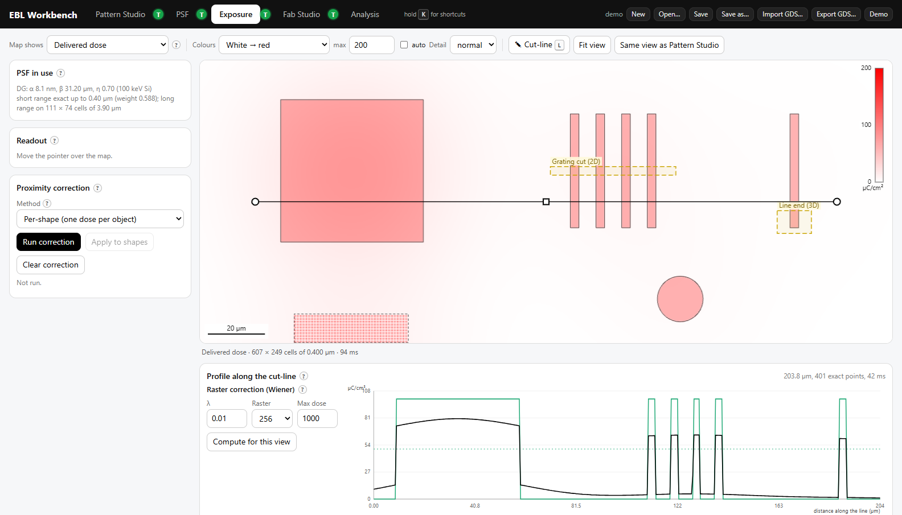

EBL Workbench
Electron-beam lithography from layout to resist profile: draw or import a pattern (GDSII), choose or simulate the point-spread function with a Monte Carlo, expose and correct for proximity effects, then process the sample in Fab Studio — resist, development, lift-off, RIE and crystal-plane KOH etching.

EBL Workbench
The whole Workbench in your browser — Chrome, Edge or Firefox, on any computer. Nothing to install; it runs on your machine, and the tutorial videos stream from this site. For teaching, exercises and the demo patterns.
Open in the browser Download for offline useThe download is the same page as one HTML file, with its tutorial videos (about 90 MB): unzip and double-click EBL Workbench.html.
EBL Workbench PRO
The same Workbench for real e-beam work. Monte Carlo, the proximity-correction solve and KOH etching run in a native multithreaded core on all processor cores, and whole-chip corrections use the computer's memory instead of a browser tab's — a full chip in minutes. Self-contained: unzip and start, nothing to install. Results are the same as in the browser version.
Windows macOS (Apple Silicon) Linux (x64)xattr -dr com.apple.quarantine "EBL Workbench Pro" (the package is not notarised), then double-click Start EBL Workbench Pro.command../start-ebl-workbench-pro.sh in the unzipped folder.Which one?
| EBL Workbench | EBL Workbench Pro | |
|---|---|---|
| Runs | in any browser | Windows, macOS (Apple Silicon), Linux (x64) |
| Monte Carlo, correction, KOH | JavaScript, in the page | native core, all processor cores (several times faster) |
| Largest correction | about 2 million control points | whole chips — limited by the computer's memory |
| Use it for | teaching, exercises, demo patterns | real e-beam layouts |
What is in it
- Pattern Studio — draw shapes, arrays and dose ramps; import and export GDSII (with dose tables for corrected files).
- PSF — double/triple Gaussian and exponential models, or a built-in Monte Carlo of electron scattering in resist and substrate.
- Exposure — delivered dose maps and cut-lines; per-shape, raster and fractured proximity correction.
- Fab Studio — spin, expose, develop, deposit, lift-off, RIE, isotropic and KOH etching on a voxel sample in 2D or 3D; KOH follows the crystal planes of the wafer.
- Tutorial videos for each tab, under the T buttons.
All versions and their release notes: release pro-v1.0.